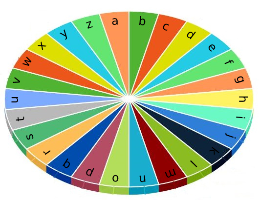

| Category | Difficulty | Likes | Dislikes |
|---|---|---|---|
| Algorithms | Easy | 769 | 37 |
jpmorgan | ibm | thomson-reuters
There is a special typewriter with lowercase English letters 'a' to 'z' arranged in a circle with a pointer. A character can only be typed if the pointer is pointing to that character. The pointer is initially pointing to the character 'a'.

Each second, you may perform one of the following operations:
Given a string word, return the minimum number of seconds to type out the characters in word.
Example 1:
Input: word = "abc"
Output: 5
Explanation:
The characters are printed as follows:
- Type the character 'a' in 1 second since the pointer is initially on 'a'.
- Move the pointer clockwise to 'b' in 1 second.
- Type the character 'b' in 1 second.
- Move the pointer clockwise to 'c' in 1 second.
- Type the character 'c' in 1 second.Example 2:
Input: word = "bza"
Output: 7
Explanation:
The characters are printed as follows:
- Move the pointer clockwise to 'b' in 1 second.
- Type the character 'b' in 1 second.
- Move the pointer counterclockwise to 'z' in 2 seconds.
- Type the character 'z' in 1 second.
- Move the pointer clockwise to 'a' in 1 second.
- Type the character 'a' in 1 second.Example 3:
Input: word = "zjpc"
Output: 34
Explanation:
The characters are printed as follows:
- Move the pointer counterclockwise to 'z' in 1 second.
- Type the character 'z' in 1 second.
- Move the pointer clockwise to 'j' in 10 seconds.
- Type the character 'j' in 1 second.
- Move the pointer clockwise to 'p' in 6 seconds.
- Type the character 'p' in 1 second.
- Move the pointer counterclockwise to 'c' in 13 seconds.
- Type the character 'c' in 1 second.
Constraints:
1 <= word.length <= 100word consists of lowercase English letters.